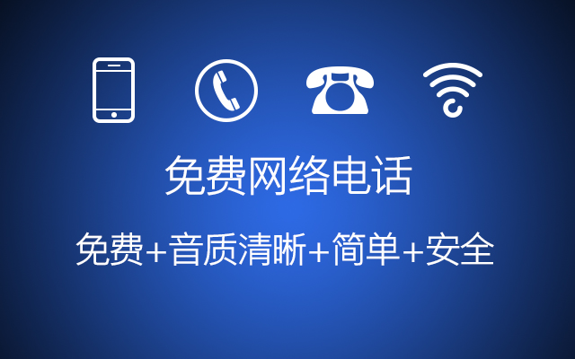

用了各种免费网络电话软件不满意，想试试别的免费网络电话是不是好一些，但是别人说的各种好，你用却“然并卵”。看到这篇文章之前，你可能已经见过太多种答案。所以，这里从免费网络电话原理说起，通过原理和国内免费网络电话的产品对比，告诉您免费网络电话如何选？
免费网络电话：又称网络电话，网络电话原理就像浏览网页，用户输入网址，电脑浏览器就会对应服务器发起访问请求，服务器收到请求后返回你请求的页面，显示，完成访问。网络电话的原理也是一样的：用户拨打电话，向服务器发起请求，服务器传递给被叫方，双方接通，通话过程中语音被转换成数据传输，挂断完成。
1996年，国外出现网络电话，近20年时间免费网络电话的技术已完全成熟规范。目前，在信号稳定的情况下，国内免费网络电话软件与普通电话的通话质量基本无异。
【完全免费】网络电话的运营服务本是需要成本的，收费本无可厚非。但一些运营能力较强的运营商开创性的增加软件其他功能来获得盈利平衡，一直保持网络电话功能免费，大大提高了我们的期望值，所以要求免费并没错。但是很多免费网络电话运营商早期打着“免费”名义获得用户，后期却通过各种名目收取费用并降低免费用户的服务质量，这是用户最反感的做法。
【通话质量】打电话作为重要的交流工具，通话时清晰、不延迟是顺畅交流的前提。如果出现说话听不清、断断续续、甚至断线会极大影响双方的交流。因此，通话清晰度、声音延迟、是否有回音、无故断线都是免费网络电话是否好用的重要标准。
【信息安全】免费网络电话会涉及到最基本的社交信息——通讯录。这需要免费电话服务商有能力保证拨打电话信息的安全，不染指非必要权限，无后门，用心保护客户的隐私
【操作简单便捷】免费网络电话作为应用软件，操作是否简单、便捷是非常重要的。作为工具类软件，应该兼顾到不同年龄层的操作习惯。
大家听过的主流免费电话软件：360免费电话、易信、微信电话本、触宝电话、来电、微会、钉钉、有信、阿里通、Skype。给大家科普下基本信息：360免费电话、微信电话本并非免费电话软件，而是语音聊天软件。因为他们需要接听电话方同步安装软件并且保持联网。因此，国内主流的免费电话是：易信、触宝电话、来电、微会、钉钉、有信、阿里通、Skype。
| 软件 | 运营公司 | 支持系统 |
|---|---|---|
| 易信 | 网易 | Android/IOS/Windows/Mac/WindowsPhone |
| 触宝电话 | 触宝科技 | Android/IOS |
| 来电 | 腾讯 | Android/IOS |
| 微会 | 百果园 | Android/IOS |
| 钉钉 | 阿里巴巴 | Android/IOS/Windows/Mac |
| 有信 | 有信网络技术 | Android/IOS/Windows |
| 阿里通 | 阿里通 | Android/IOS/Windows/iPad |
| Skype | Microsoft | Android/IOS/Windows/Mac/WindowsPhone |
【免费通话时长】
免费网络电话软件并不是无限拨打电话，而是向大家赠送一定量的免费通话时长。因此能打多少时间的免费电话是大家选择软件的重要因素。给大家统计最近不同软件赠送免费通话时长数据：
| 软件 | 首次注册 | 日常赠送 | 点评 | 评分 |
|---|---|---|---|---|
| 触宝电话 | 500分钟 | 每日签到10分钟 | 赠送分钟数充足，分钟数永久有效是亮点 | |
| 易信 | 180分钟 | 不详 | 基本不够用，需多参与活动或者费购买 | |
| 来电 | 100分钟 | 不详 | 不够用，可以多加QQ群获得分钟数 | |
| 微会 | 50分钟 | 每日签到5分钟 | 购买18元/月会员获得更多通话时长 | |
| 钉钉 | 100分钟 | 无 | 不支持固话，也无其他免费分钟数获取方式 | |
| 有信 | 50分钟 | 每日签到10分钟 | 购买15元/月会员费获得更多通话时长 | |
| 阿里通 | 随机赠送 | 不详 | 按接听地区收费，国内0.10元/分 | |
| Skype | 无 | 无 | 主要针对拨打国际电话 |
统计时间：2015年11月10日，服务商赠送的免费通话时长一直都在变化中，仅作参考
【通话质量及拨打体验】
目前，免费网络电话拨打方式有两种，一是直拨：拨打方发起通话请求，服务器响应，呼叫接听方；一是回拨：拨打方发起通话请求，服务器响应，呼叫通话双方。两者各有优劣，回拨的通话质量好于直拨，但回拨双方等待的时间长于直拨。
| 软件 | 清晰度 | 通话延时 | 回声 | 稳定性 | 流量消耗 | 评分 |
|---|---|---|---|---|---|---|
| 触宝电话 | 清晰 | 轻微 | 无 | 稳定 | 直拨300kb/min，回拨一通电话30kb | |
| 易信 | 清晰 | 轻微 | 无 | 稳定 | 全部采用回拨模式,流量消耗官方未公布 | |
| 来电 | 清晰 | 轻微 | 无 | 稳定 | 流量消耗情况官方未公布 | |
| 微会 | 清晰 | 轻微 | 无 | 断线两次 | 回拨一通电话20-30kb | |
| 钉钉 | 清晰 | 无 | 无 | 稳定 | 全部采用回拨模式,流量消耗官方未公布 | |
| 有信 | 轻微 | 轻微 | 无 | 稳定 | 直拨230kb/min | |
| 阿里通 | 杂音多 | 严重 | 有 | 断线一次 | 按官方电话资费收取 |
网络电话和访问页面一样会受到网络信号、线路、终端设备、服务器等因素影响，因此不同地域、不同设备、不同时段、不同网络信号情况下通话质量都会有所不同。Skype，因为主要是拨打国际电话，因此并未做具体测试。
【触宝电话】赠送的免费通话时长最多，对免费电话通话时长需求多并且不愿意付费的用户首选。通话质量优质，但触宝电话不具备多人通话功能。
【易信】多人通话60分钟、每月60分钟免费国际电话市场是亮点，如果对国际电话和群聊有需求推荐使用，单人免费通话时长只有60分钟，基本不够用，需要花钱购买或不断参加活动购买星币换取分钟数。
【来电】通话时长一般，参团以后分钟数基本够用。通话质量优质，还可以直接拨打QQ，但是偷偷给没有安装的接听方发推荐短信行为恶劣，能接受的话可以下载使用。
【微会】软件经常提示付费会员可以获得更优质的服务和通话质量，觉得官方对普通免费用户不重视，如果愿意付费使用免费网络电话可以试试。
【钉钉】通话质量最满意的，可惜免费通话时长少不够用。毕竟钉钉是企业协作、办公、通讯软件，并非专业免费网络电话软件，推荐企业用户使用。
【有信】通话时长较少，总是不断推荐会员。成为会员后通话质量好一些，和微会一样经常提示成为会员能够享受更优质服务和通话质量。如果愿意付出一定费用可以试试。
【阿里通】通话质量一般，并且按通话时长收费，与其他免费网络电话软件的运营方式不同，更类似之前的IP电话卡。
本次测评主要针对国内主流免费网络电话软件并未包含所有，主流软件筛选依据是用户量超千万。用户的认可是 “免费网络电话哪个好”重要的判断依据。值得一提的是，今年易信和触宝电话用户量已经突破2亿。名不见经传的触宝电话成为2015年电话类APP排名第一软件，着实是免费网络电话行业的一匹黑马。不过测评后发现原因是微会、有信等软件推出会员费后触宝电话仍然保持高时长的免费通话分钟数赠送和承诺一直免费。所以，有时用户的选择是最好的答案！
当然，每个人的需求是不同的，大家可以根据每个产品的优势结合自己的特点选择最适合自己的免费网络电话软件！